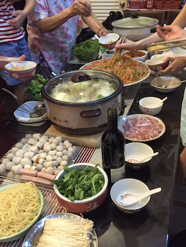
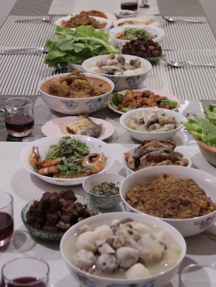
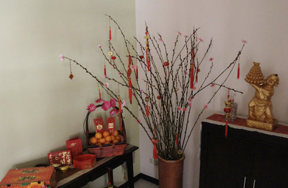
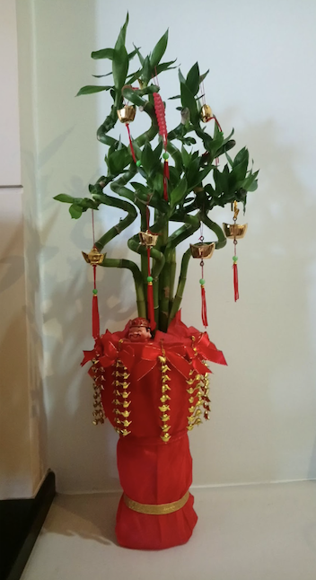
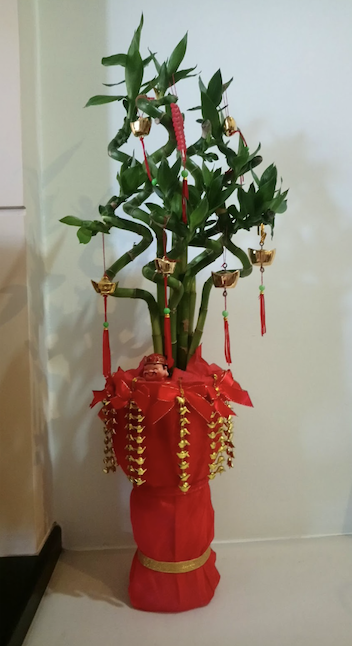

Chinese New Year in Malaysia
Chinese New Year is typically celebrated between the end of January to mid February. Here in Malaysia there is typically about 1 week of public holiday across the country. Chinese New Year is among one of the big celebrations that are celebrated, besides Deepavali (Diwali) and Hari Raya Aidilfitri (Eid-Mubarak). Typically most Chinese families will have a feast on Chinese New Year eve and for the first and second day of CNY, there would be family gatherings and the activities that is done varies from hanging out at one of the elder's house to travelling together.
In some Chinese communities, they celebrate CNY for 15 days, with each day having a significance. Some of the major events in those 15 days would be on the 9th and 15th day. On the 9th day, it is Pai Ti Kong, that is a celebration important to the Hokkiens where they celebrate the birthday of the Jade Emperor of Heaven and a prominent requisite offering is sugarcane. On the 15th day is the Lantern Festival! It is also known as Chap Goh Meh (the fifteen night in Hokkien) by many and on this day, tangyuan (sweet glutinous rice ball brewed in soup) and rice dumplings are eaten, childrens and families will walk the streets carrying lanterns. On this day as well, it is also celebrated by single people who are looking for a romantic partner, usually single women would write their contact on mandarin oranges and throw them into the river/lake where single men would collect and eat it. It is said that if it tastes sweet, it represents good fate while sour represents bad fate.
CNY Eve
On Chinese New Year Eve, I would 2 feasts, a lunch feast with my mom's side of the family and a dinner feast with my dad's side of the family. Every year we would either make home cooked dishes or we would do a hot pot. During the dinner feast, there would also be an appetizer, yee sang where it is a raw fish salad.
 
CNY - Day 1
On the very first day, my family would wear new clothes and in the morning, we would give offerings and pray at our home ancestral shrine then we would eat Buddha's Delight, a vegetarian dish, to start off the day. We will take our annual family photo together with my cousins and there would be trading of mandarin oranges between the adults and then those who are married in the family will give angpow (red envelopes) that contains cash money as a form of blessing. One would usually say Gong Xi Fa Cai (wishing you prosperity in the coming year), or zhu ni xinnian kuaile, shenti jiankang (happy new year and good health). My family would then visit the temples and the columbarium to pay respects to my grandfather, ancestors and relatives for both my dad's and mom's side of the family then my immediate family would visit my mom's relatives since my grandfather is the youngest on her side of the family. In most traditions, the older/more senior members will be visited while the younger ones will do the visiting.


CNY - Day 2
On this day, it's a more relaxed day as my grandparents are the oldest on my dad's side of the family so they will be visited by relatives. My grandmother will always play Mahjong with my parents and aunt/uncle and in the recent years, the younger generations like my cousins and I picked up on playing mahjong so we also play with my grandma as well


CNY - Remaining days
For me, my family are not Hokkiens and we don't really celebrate most of the remaining days besides the very last day of CNY that is Day 15. But for the rest of the CNY celebration, many places around have CNY decorations displayed and they would usually be displayed until a few days after Day 15.
 
